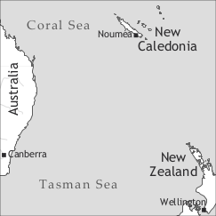

by Sabine Ehrhart and Melanie Halpap

Tayo is a French-based contact language spoken by about 3,000 people living in or having some relationship to the Saint-Louis tribe. The Saint-Louis settlement was founded in 1860 by the French Marist Fathers, who wanted to create a réduction, a religious training centre for young male Melanesians from the whole country, and the emergence of the Creole took place in this special environment. Tayo has elements from Melanesian languages from the New Caledonian South, the Centre and the North, in combination with French linguistic structures. Saint-Louis is situated approximately 15 km from Nouméa, the capital of New Caledonia, in the South Pacific.
Initially, the contact language functioned as an additional language for its speakers: Until 1920–1930, its use was parallel to the existence of one or more Melanesian languages and also learner varieties of French with varying degrees of elaboration. After 1925, it progressively occupied the position of a first language (L1) for most of its users, starting from the younger generations. More recently, however, its position has extended and it is also used as an L2, L3 or L4 by some speakers living or having lived in the surroundings of Saint-Louis.
The development of the social foundations of Tayo throughout time has been discussed in detail in Ehrhart (1993) and Ehrhart & Corne (1996) (and to a lesser extent, also in Ehrhart & Mühlhäusler 2007, Ehrhart 2003, 2005).
Saint-Louis, like many other villages scattered throughout Melanesia, is in fact a European ‘artefact’, a village which came into being through the activities of the Marist mission. Prior to 1855, there was no permanent Melanesian settlement in the immediate vicinity of present-day La Conception/Saint Louis. The Far South was sparsely inhabited by two tribal groupings, speaking closely related languages/dialects. These were Drubea and the dialect grouping consisting of Numèè and Wêê; all of these were languages with two tones. The annexation of New Caledonia by France in 1853 and the 1854 founding of Nouméa (then known as Port-de-France) gave rise to conflict with the local Kanaks; the French administration granted to the Mission lands straddling possible attack routes and encouraged settlement there in order to protect the fledging town. (Ehrhart & Corne 1996: 265).
A first settlement of the Catholic Mission was founded in 1855 at La Conception about 10 km from Nouméa. When it became apparent that the young men from Pouébo and those from Touho did not get along well because of antecedents of tribal warfare in their home regions, a new centre was established in Saint Louis in 1856, at a short distance from La Conception. Saint-Louis grew quickly, school buildings, workshops, and a church were constructed, and farmland developed on the fertile soils of the surrounding plains, and also an orphanage for young girls was added. Saint-Louis then attracted people of diverse origins from all over New Caledonia, for instance the fugitives after the revolts at the end of the 19th century. According to visitors at the end of the 19th century, more than a dozen Melanesian languages were spoken at school. Soon it became clear that after the young people had finished their studies, they did not want to return to where they had come from. Instead, they founded families and settled down definitively in what became the Saint-Louis tribe.
For the first pupils at the missionary schools, good knowledge of French and even Latin were attested by the missionaries as well as by visitors to Saint-Louis. As the group of pupils grew bigger and the linguistic origins became more diverse, an approximate variety of French or a French-based interlanguage was used as a lingua franca, according to oral sources. A highly developed pluri- and multilingualism (linguistic diversity at the individual and the collective level) must have been practiced as well amongst the pupils of the two mission schools (the one for the boys and the other one for the girls), during periods when the missionaries were present or not in sufficient number to impose French monolingualism. The need to feed the increasing school population also led to the necessity to spend a great amount of hours in the fields and gardens instead of the classroom. The agricultural work opened the world of the missionaries to some extent to the outside world, as more adult experts were needed than the mission had to offer. On the one hand, this fact gave more strength to the local languages, as adult partners from the Southern Region of New Caledonia were also present. On the other hand, there were partners from other origins: In 1868, the French Penal Administration set up a small prisoner camp close to Saint-Louis, but the contact with the local population seems to have been very slight. There was also a settlement of “Indian labourers” establishing sugar cane fields near Saint-Louis. Between 1864 and 1868, several hundreds of immigrants from Reunion Island had come to New Caledonia, mainly to develop a sugar cane industry. They were rich land owners (often from the French aristocracy) and Indian labourers (originally from different parts of India but having passed through the Indian Ocean Islands before coming to the South Pacific). Speedy (2007) has intensively studied migration movements from the Indian Ocean to New Caledonia and she has drawn the attention to a third group, “les petits Blancs”, people from Reunion Island of European descent with no fortunes but important resources of knowledge in this new industry. Some of them have been in contact with people from Saint-Louis. This is an important fact: Chaudenson (1994) discusses the hypothesis that Saint-Louis might have undergone strong influences from the creole-speaking population from Réunion and thus be a second-generation-creole (Chaudenson 2003) and not a local production from the type of a school creole (Baker 2001). In Ehrhart (1991) it was shown that the groups of Indian descent were not strong enough to impose their creole. However, the influence of “les petits Blancs” cannot be so easily negated. In a perspective of linguistic ecology (Mühlhäusler 2003, Mufwene 2001), Sabine Ehrhart did not exclude a possible partial influence from some features or structural tendencies or lexicon stemming from Indian Ocean Creoles, but the study of the socio-historical development of the Tayo speech community shows that they did not need another creole as a stimulus or a trigger movement to give birth to their Creole. They were able to create Tayo by their own means and accordingly, the oral tradition of Tayo speakers says “we produced it”. See Ehrhart (2012) for more details on this point.
A contact-induced variety used between speakers of French and speakers of the dozen of Melanesian languages (especially those from the Touho region and the ones from the Far South) present at Saint-Louis was in use as a lingua franca at the end of the 19th century, with different levels of perfection according to the speakers’ linguistic biographies. Despite the fact that the Melanesian languages were not mutually intelligible, most people in Saint-Louis spoke or at least understood through mechanism of translanguaging (Garcia 2009), especially dual-lingualism (Lincoln 1979; also called receptive bilingualism by some authors) two, three, and more Melanesian languages.
From the 1920s onwards and through a bundle of acts of identity (Le Page & Tabouret-Keller 1985), the contact language became the main language of the Saint-Louis speech community. Consequently, and mainly because of the marriage of linguistically mixed couples and the lack of transmission in situations of receptive bilingualism, the knowledge of the Melanesian languages declined. In the 1980s, the only people using actively Melanesian languages at Saint-Louis (besides French and Tayo) were people who were not born there, but had migrated to this tribe later on in their lives.
Tayo had become so strong that it was the main vehicular language in nonofficial situations in the Saint-Louis school grounds and thus became the second language of the Polynesian community from Wallis and Futuna Islands living nearby until the beginning of the 21st century.
The emergence of Tayo is not an isolated phenomenon in the region. In La Conception, a contact language called “le machin d’ici” was spoken in the first half of the 20th century. In Yaté in the Far South of New Caledonia, a contact language called “le faux français” still exists and is even expanding. Other contact varieties have been described by Barnèche (2005) for popular neighbourhoods of the urban region of present-day Nouméa. Informants in the Païta region at the border of Grand Nouméa observe thriving contact varieties between French and Austronesian languages of Polynesian and Melanesian origin. As for Tayo, it has spread by the expulsion of the Polynesian L2-speakers from the Saint-Louis region. They have settled in different parts of the urbanized South and their experience with a French-based contact language is likely to influence their communication of an exogenous type, with other communities than their own. This dissemination of Tayo or Tayo-based contact features through Polynesian L2-, L3- or L4- speakers needs further research and its results would be of utmost interest for creolistics and theories of language contact.
Our description of the linguistic system stems mainly from the 1980s and 1990s. During Ehrhart’s visits in 2003 and 2006, she noticed that there had been developments and structural changes. We have taken the decision not to mix the data and to present a homogeneous corpus from the temporal point of view. The speech of the younger generations should be described through further research.
The basilectal variety of Tayo has the five short vowels /i/, /e/, /a/, /o/, /u/ and the two long vowels1 /a:/, /o:/, which derive from French nasal vowels. A noteworthy feature in Tayo is the generally fast rate of speech and the consequent contraction of sounds and morphemes. Thus, the two long vowels are shortened in word-final open syllables, and the quantitative distinction disappears (gra:mer2 ‘grandmother’, but gra ‘big’) (Ehrhart 1993: 93).
|
Table 1. Vowels |
|||
|
front |
central |
back |
|
|
close |
i |
u |
|
|
mid |
e |
o, o: |
|
|
open |
a, a: |
||
|
Table 2. Consonants (modified from Ehrhart 1993: 96) |
||||||||
|
bilabial |
labio-dental |
labio-velar |
alveolar |
postalveolar |
palatal |
velar |
||
|
plosive |
voiced |
mb |
nd |
ŋg |
||||
|
voiceless |
p |
t |
k |
|||||
|
fricative |
voiced |
v |
||||||
|
voiceless |
f |
s |
ʃ |
(x)3 |
||||
|
affricate |
voiced |
nd̥ʒ4 |
||||||
|
nasal |
m |
n |
ɲ <ñ> |
|||||
|
approximant |
w |
l, r |
j |
|||||
The Tayo consonant inventory has the alveolar and postalveolar fricatives /s/ and /ʃ/, but lacks their voiced counterparts /z/ and /ʒ/ (Ehrhart 1992a: 158). /r/ occurs pre- or intervocalically as an apical flap (Corne 1999: 21); in word-final position, /r/ can occur under certain conditions, but is often realized as a schwa or a lengthened preceding vowel. /b/, /d/, and /g/ are always prenasalized. In word-final position the plosive is lost and the sound is realized as a nasal only (e.g. *latamb > latam ‘table’, Ehrhart 1993: 96–99).
Unlike most of the Melanesian languages that contributed to its formation (cf. the comments on individual languages in Lewis (2009)), Tayo is not a tone language.
Nouns are morphologically invariable with regard to number and gender. Some nouns have an incorporated initial element that goes back to the French articles le and la, e.g. lapli ‘rain’ < French la pluie, and the partitive de/du, e.g. ndife ‘fire’ < French du feu. These initial elements have completely lost their value as articles, and the resulting nouns can also occur in combination with postposed -la or the plural marker tule/tle/te (Ehrhart 1993: 107ff).
(1) laser-la la travaj
nun-dem/def si work
‘The nun works.’ (Ehrhart 1993: 121) (laser < French la sœur)
The French definite article le can occur in decreolized contexts (Ehrhart 1993: 127).
Likewise, there is an indefinite article a preposed to the noun, for example a latam ‘a table’, which is identical in form with the numeral ‘one’. However, its use is not obligatory and rather occurs in decreolized contexts (Ehrhart 1993: 126):
(3) na (a) loto pu mwa
exist (indf.art) car poss 1sg
‘I have a/one car.’ (fieldwork Ehrhart 1991)
The plural is expressed by tule/tle/te preposed to the noun: tule ŋgujav ‘the guavas’, te larivjer ‘the rivers’.
The function of the postposed determiner -la is between that of a definite article and that of a demonstrative, like in New Caledonian regional French. It can introduce something/someone new or point to an object/person within the hearer’s reach (Ehrhart 1993: 121ff). -la can be used for singular and plural alike (examples 4a and 4b). It is optional, but is especially frequent in free and vivid speech and after loanwords of English (ex. 5) or Melanesian (ex. 6) origin, or after monosyllabic words (ex. 7).
(4) a. laser-la la travaj
nun-dem/def si work
‘The/this nun is working.’ (Ehrhart 1993: 121)
b. tule laser-la le travaj
pl nun-dem/def si work
‘The/these nuns work.’ (Ehrhart 1993: 122)
(5) ma uver kapoa-la5
1SG open tin-dem/def
‘I open the/this tin.’ (Ehrhart 1993: 115)
(6) se ki, ñoka-la?
presv who woman-dem/def
‘Who is this woman?’ (ñoka is a word from a Melanesian language of the South)
(Ehrhart 1993: 122)
(7) tule trimbi nde sind-la
pl tribe of South-dem/def
‘all the tribes of the South’ (Ehrhart 1993: 122)
In some contexts, the demonstrative component of -la seems to be dominant. For instance, the sentence tle Afrika-la sufer [pl African-dem/def suffer] is rejected for the reading ‘the Africans suffer’ if the Africans are not physically present. Unlike in French, -la in Tayo is not confined to nouns only, but can follow any other word class, such as pronouns (lesot-la ‘they’), adverbial constructions (wala, kom sa-la ‘voilà, like this’) or verbs (Ehrhart 1993: 123):
The possessive pronoun is formed with the construction pu + personal pronoun (Ehrhart 1993: 140). Tayo does not distinguish between the possessive adjective (‘my’, ex. 9) and the possessive pronoun (‘mine’, ex. 10); in both cases, pu + personal independent pronoun follows the noun:
(9) kas pu mwa
house prep 1sg
‘my house’ (Ehrhart 1993: 140)
(10) kas-la le pu mwa
house-dem/def si prep 1sg
‘This house is mine.’ (own knowledge Ehrhart)
Identically, for possession involving two nouns, the possessum precedes the possessor, and the particle pu is used to link the two (Ehrhart 1993: 149):
(11) fij pu ʃef
daughter prep chief
‘the chief’s daughter’ (Ehrhart 1993: 226)
Possessive pronouns present a morphological category strongly affected by contraction of speech sounds as shown in Table 3. Whereas the original long forms are pointed out in the second column, the third column shows the different degrees of possible contraction.
|
Table 3. Long and contracted forms of possessive pronouns (based on Ehrhart 1993: 141) |
||
|
long form |
contracted form |
|
|
1SG |
pur mwa |
> pu mwa > pmwa > pwa |
|
2SG |
pur twa |
> pu twa > puta > pta |
|
3SG |
pur lja |
> pu lja > plja > pja |
|
1PL |
pur nu |
> pu: nu > pu nu > punu (no pause after the first syllable) |
|
2PL |
pur usot |
> pu: usot > pu uso |
|
3PL |
pur sola / pur lesot |
> pu: sola > pu sola > pu sla > pu: lesot > pu lesot |
Tayo personal pronouns have different forms for number (singular, dual, plural) and person, but not for gender. Table 4 gives an overview.
|
Table 4. Personal pronouns (based on Ehrhart & Corne 1996) |
||
|
dependent pronoun / subject index |
independent pronoun |
|
|
1SG |
ma |
mwa |
|
2SG |
ta |
twa |
|
3SG |
la, le |
lia, lja |
|
1DU |
nunde |
nunde |
|
2DU |
vunde |
vunde |
|
3DU |
lende |
lende |
|
1PL |
nu |
nu |
|
2PL |
uso |
uso |
|
3PL |
sa, sola, lesot, le |
sola, lesot |
There are special dependent pronouns different from the independent pronouns in the singular and in the 3rd person plural, which can serve as subject indexes. A subject index is “a kind of agreement morpheme or clitic pronoun” (Meyerhoff 2008: 54). Le can be used for 3rd person singular and plural alike. In modern Tayo it is used with all persons (e.g. sa sé nou le fe [this presv 1pl si do] ‘It is us who do it.’ p.c. Jessica Wamytan), but in the Tayo of the 1980s and 1990s as we describe it here such constructions seem to have been rare. For more detailed information on the use of le, see §6.
The independent pronoun is used as a direct object (12), with a preposition as indirect object (13), with pu to indicate possession (14), as reflexive pronoun (see §6, examples 38 and 39), and as emphatic subject pronoun (mwa ma malan ‘I am ill’).
(12) sa wa mwa
3pl see 1sg
‘They see/saw/will see me.’ (Corne 1990: 13)
(13) nu tro a:mbete ave lja depi taler
1pl too annoyed with 3sg since just.now
‘We are too annoyed with him since just now.’ (Ehrhart 1993: 168)
(14) […] se fot pu twa
[…] presv fault prep 2sg
‘[…] it’s your fault.’ (Ehrhart 1993: 243)
For the 3SG pronoun, lia is considered the more correct form, but it is mostly pronounced as monosyllabic lja. The singular independent pronouns undergo reduction in fast speech, which makes the 1SG (mwa) and 2SG (twa) pronouns correspond to their subject index counterparts ma and ta. Sola (< sotla < French les autres-là) for 3PL is preferred by older speakers, while the younger generation uses lesot or sa.
Duals have a separate form (nunde, vunde, lende), which is used for both inclusive and exclusive dual. Nevertheless, there are optional constructions for the exclusive dual (cf. 15a and b). Although these are not anchored in the grammar of the language, the inclusive/exclusive distinction seems to be prevalent in the mind of Tayo speakers (Ehrhart 1993: 137–140):
(15) a. nunde sa twa nu ale
1du without 2sg 1pl go
‘the two of us go (you not included)’ (fieldwork Ehrhart)
b. nude tu sel
1du all alone
‘the two of us (exclusive)’ (adapted from Corne 1995a: 125)
Corne (1990: 14) claims that a subject index is always mandatory with adjectival predicate heads.
However, in her 1988–1993 fieldwork, Sabine Ehrhart also encountered instances of independent pronouns which were directly linked to the adjectival predicate head in the speech of older people. In constructions with a predicate other than an adjective, the subject index precedes the verb by itself without an independent pronoun.
(17) sa wa mwa
3pl see 1sg
‘They see/saw/will see me.’ (Corne 1990: 13)
Adjectives in Tayo function mostly as stative verbs like in their substrate languages (Corne 1999: 50) and can also be preceded by tense and aspect markers or by a subject index. They are invariable and mostly occur in relative clauses after the noun (cf. ex. 18; Ehrhart 1993: 201).
(18) ma mbwar ndolo-la sa le sal
1sg drink water-dem/def rel si be.dirty
‘I am drinking the dirty water.’ (lit. ‘I drink the water that it is dirty.’) (Ehrhart 1993: 201)
However, there is also a closed class of prenominal adjectives like ŋgra ‘big, long’, peti ‘small’ or vje ‘old’, and their increased use among younger people suggests the growing influence of French on Tayo (Ehrhart 1993: 144, 147). There exist also a few adjectives which are immediately postposed to the noun, e.g. sepol drwat [shoulder right] ‘right shoulder’.
As for their predicative use, adjectives are preposed to nouns. The clause is usually introduced by the subject index le (optional), followed by the modifying adjective and the noun. Thus, the regular word order S-V is changed to V-S, i.e. the stative verb precedes the noun (Corne 1999: 43) as in examples (19) and (20):
(19) le boṅ chigom-la
si be.good chewing.gum-dem/def
‘The chewing-gum is good.’ (Corne 1990: 14)
(20) le fu lia
si be.mad 3sg
‘He/she is mad.’ (adapted from Corne 1990: 14)
As in colloquial French, the noun in subject position can be left-dislocated, e.g. in order to express emphasis; the following adjective is then linked through the obligatory subject index le (see examples 21 and 22).
(21) ndite-la le tro sikre
tea-dem/def si too sweet
‘The tea is too sweet.’ (Ehrhart 1993: 147)
(22) lia le fu
3sg si crazy
‘It is he/she who is crazy.’ (fieldwork Ehrhart 1991)
More detailed information about the topics in this section can be found in Ehrhart (1993: 135-143).
Tense, mood, and aspect in Tayo are mostly not expressed morphologically, but through the context or the addition of an adverb. For instance, the adverb mena ‘now’ indicates the present, mbja:to ‘soon’ the near future, and ava ‘before’ the past.
However, Tayo also has a closed number of verbal markers expressing tense, mood, and aspect. The most frequent TMA markers are listed in Tables 5 and 6. The verb in the present is usually unmarked, while it optionally receives the marker va for the future. Other optional markers that occur frequently before the verb are fini for completion, atra nde for the progressive aspect and te for marking the past. The markers rarely combine, but if they do, the order is tense–aspect (cf. Corne 1999: 41).
(23) […] nu a fini labure […]
[…] 1pl fut compl work […]
‘[…] we will have finished working […]’ (Corne 1999: 41)
|
Table 5. Tense and aspect markers (based on Ehrhart 1993, Corne 1999: 40f.) |
|||
|
marker |
function |
French etymon |
example |
|
zero |
habitual present present progressive near future past |
mater pu mwa la pa reste Numea mother poss 1sg si neg stay Noumea ‘My mother doesn’t live in Noumea.’ ta ekri kwa? 2sg write what ‘What are you writing?’ ta fe kwa se swar? 2sg do what this evening ‘What are you doing tonight?’ [...] e pi de-la truve mek [...] [...] and then two-dem/def find man [...] ‘[…]and they found the man […]’ |
|
|
ete |
past |
été |
on ete bja arive pukwa? 1pl pst well arrive why ‘Why did we arrive well?’ |
|
va |
future/irrealis |
va |
wala ndepresjo-la la va tape nu foc depression-dem/def si fut hit 1pl ‘And see, this tropical depression will hit us.’ |
|
atra nde |
progressive |
(être) en train de |
ta atra nde fe kwa? 2sg prog prog do what ‘What are you doing at the moment?’ jer swar ma atra nde lir yesterday evening 1sg prog prog read ‘Last night I was reading.’ |
|
fini, nd̥ʒa |
completive |
fini(r), déjà |
ma fini / nd̥ʒa reste numea 1sg compl/compl live Noumea ‘I lived in Noumea (but now I am living elsewhere).’ |
Klingler (2003: 272 fn.) notes that atra nde seems to “highlight the progressive nature of the action”, but that it could also be analyzed as an adverbial marker since progressive in Tayo can also be expressed without it. Kihm (1995: 238) posits the Tayo progressive marker as monomorphemic because atra nde always occurs together. Additionally, it has acquired some more functions than in French, e.g. it can precede adjectival predicates. When it occurs preposed to such a stative verb, it does not function as an inchoative marker like in other creoles. Instead, it signals the current relevance of the state:
(24) la atra nde malan
3SG prog prog sick
‘She’s sick at the moment.’ (Ehrhart 1993: 171)
Ete is frequently used by the younger generation to express past tense and occurs in the more decreolized varieties of Tayo. In the basilect, it usually does not occur in preverbal position, but functions as a full verb (see Ehrhart 1992b: 238).
Fini can precede stative verbs (cf. Table 5) as well as non-stative verbs to mark the perfective or give a completive meaning to the verb (Ehrhart 1992b: 241–243):
|
Table 6. Modality markers |
|||
|
marker |
function |
French etymon |
example |
|
ule |
wish, determination |
voulez |
[…] me person le ule done […] […] but nobody si want give […] ‘[…] but nobody wanted to give […]’ |
|
fo |
obligation |
(il) faut |
fo ale vit […] oblig go fast […] ‘You have to go fast […]’ |
|
ako |
obligation, repetition |
encore |
ma ako ale o ʃa 1sg oblig go to field ‘I still have to go to the field.’ |
|
mwaja (nde) |
ability |
moyen de |
no, ma pa mwaja vja neg 1sg neg abil come ‘No, I cannot come.’ |
|
kone |
ability |
connaît |
ta kone parle tajo 2sg abil speak Tayo ‘You can speak Tayo.’ |
|
mbeswa nde |
necessity |
besoin de |
napa mbeswa nde ndi no pu lja neg necess necess say name poss 3sg ‘We don’t have to say his name.’ |
|
ke |
assertive, emphasis on the action |
(rien) que |
la ke fe ndusma 3SG emph make slowly ‘He really works slowly.’ |
Na, with the variant napa for the negative, functions as existential marker (ex. 27). It is identical to the verb of possession and is combined in those instances with the preposition pu and an independent pronoun (ex. 28):
There is more research required for the exact categorization of the subject index le, but it generally links the noun phrase to the verb phrase (see Ehrhart 1993: 174ff). In certain contexts, it announces the subject that follows for the third persons singular and plural (e.g. ex. 20). In addition, it can function as subject in expletive subject constructions (cf. 29) and in left-dislocation constructions (ex. 30):
(30) pater pu twa le fini vja
father poss 2sg si compl come
‘Your father came.’ (Ehrhart 1993: 176)
Le can also frequently be found following elements highlighted with the presentative se (31) and as a linker between the NP and the VP when the NP is either combined with the postposed determiner -la (ex. 32) or with a possessive pronoun (cf. 33).
(32) liv-la le pu ki?
book-dem/def si for who
‘Whose book is it?’ (own knowledge Ehrhart)
Le commonly occurs after the relative particle sa in subject relative clauses (cf. 31 above). In object relative clauses, if the subject is realized as a full noun, le follows the subject (Corne 1994: 289):
(34) […] tule ŋguyav sa wawa le pla:te
[…] pl guava rel grandmother si plant
‘[…] the guavas that grandma planted.’ (Ehrhart 1993: 119)
Moreover, le is used after indefinite pronouns (Ehrhart 1993: 176):
If le occurs together with the negator pa, it precedes the latter as in ex. (36):
There is no copula in Tayo with predicative adjectives. The only copula possible (and required) is the one with predicative locative phrases. In these cases, a verb such as parti ‘to leave’ or reste ‘to stay’ functions obligatorily as copula linking the subject to the predicative phrase:
Reflexive constructions are rare and mainly occur in decreolized contexts. Here the independent pronoun is used:
(38) muʃe twa!
blow.nose 2sg
‘Blow your nose!’ (Ehrhart 1993: 177)
Reciprocity is expressed by the use of atr sola or atr lesot as in example (40):
The simple verbal base gives the form of the imperative (cf. 41), often followed by an independent personal pronoun (Ehrhart 1993: 177) as in ex. (42):
Alternatively, the imperative can be expressed with the particle fo:
Causative constructions in Tayo are introduced with the verb fe ‘to make’ or with the phrase fe pu ‘to make for’. Adding fe to intransitive verbs makes these transitive (see ex. 44), while transitive verbs gain one more argument (Corne 1997: 79; see ex. 45):
(45) ta fe pu le bruye tet pu mwa
2sg caus for si jumbled head for 1sg
‘You’re confusing me.’ (Corne 1997: 80)
Despite the productivity of this process, not all intransitive verbs can be transformed this way because the existence of other transitive verbs inherited from French can block the causative construction in decreolized contexts (e.g. lon ‘be long’ > *fe lon, but: alonʃe ‘to stretch (something) out’) (Corne 1997: 80).
Negation is expressed by the use of the preverbal negation particle pa:
(46) ma pa ule
1sg neg want
‘I do not like (to)’ (Ehrhart 1993: 189)
Pa precedes all preverbal TMA markers, except for the future marker va:
(48) ma va pa ale
1sg fut neg go
‘I won’t be going.’ (Ehrhart 1993: 190)
Another exception to this occurs in combination with the impersonal existential marker na to which pa is also postposed:
(49) […] na pa a le vya
[…] exist neg one si come
‘[…] not a single one came.’ (Ehrhart 1993: 133)
The normal word order at clause level is Subject-Verb-Object, but Verb-Subject occurs in certain contexts with stative verbs (cf. §5). Neither the subject nor the direct object is morphologically marked for case. In ditransitive constructions, Tayo shows indirect object constructions with the recipient marked by the preposition a or pu:
(51) sola done fam pu lja
3pl give wife to 3sg
‘They gave him a wife.’ (Ehrhart 1993: 169)
Although there is no passive construction in basilectal Tayo, the choice between la and le can sometimes distinguish active voice and a passive-like state: la uver magasa ‘He opens the store’ vs. le uver magasa ‘The store is open’ (Ehrhart 1993: 169).
In polar questions, most frequently the structure of the declarative sentence is used and the interrogative type is expressed by a rising intonation like in spoken French:
In content questions, the interrogative phrase is normally phrase-final (Corne 1999: 34; see ex. 53).
Only in subject questions can the interrogative phrase occur in a fronted position if it is preceded by the presentative se. The question word distinguishes between human and non-human referents: (Se) ki asks for a human referent (ex. 55), while (se) kwa asks for a non-human referent (ex. 56).
Focus can be achieved through left-dislocation (Corne 1994: 290): The focused element is moved to the left and optionally introduced by se (> French c’est), wala or na.
(57) (se) twa le fe
presv you si do
‘It is you who does it.’ (Corne 1999: 23)
Wala is derived from French voilà, but it places a much stronger emphasis on the following unit (which can be a simple noun, a whole phrase or even a clause) than its French equivalent.
A full noun phrase after wala must be followed by le:
(59) wala per le ndesan
foc father si go.down
‘It is the father who goes down.’ (Ehrhart 1993: 201)
To focus locative clauses, relativization is used. The locative is preceded by se and followed by a relative clause (Corne 1994: 291):
Due to its mainly oral use, subordination conjunctions are relatively rare in Tayo. The sentential coordination conjunctions are e/epi ‘and’, me ‘but’, selma ‘however’, u and umbje ‘or’.
(61) la (a)rete ʃeval pu lja epi la desa:nde
3sg stop horse poss 3sg conj 3sg dismount
‘He stopped his horse and dismounted.’ (Ehrhart 1993: 253)
Relative clauses are introduced by sa and followed by the subject index le in subject relative clauses (cf. ex. 62). Less frequently, another dependent pronoun can follow sa and replace le (Corne 1994: 288; see ex. 63):
(Ehrhart 1993: 152)
(63) […] lot ʃef-la sa la reste isi-la […]
[…] other boss-dem/def rel si live here-det/def […]
‘[…] the other boss who lived here […]’ (Ehrhart 1993: 153)
In object relative clauses, sa is either followed by a full noun phrase and the subject index le (ex. 64), or by a pronoun (ex. 65):
(64) tule guyav sa wawa le pla:te
pl guava rel grandmother si plant
‘the guavas that grandma planted’ (Ehrhart 1993: 119f)
Ke functions as complementizer, but is optional in basilectal varieties of Tayo (Ehrhart 1993: 207):
Causality is expressed with the markers paske and akos nde ‘because of’ (Ehrhart 1993: 207).
Si ‘if’ is the conditional conjunction. Conditionals have no special form and there is thus no distinction between potential and hypothetical clauses.
Counterfactual constructions use ete or fini.
We especially thank Julia-Jessica Wamytan and Suewellyne Wamytan for their discerning feedback, which allowed us to bluild a more coherent corpus.